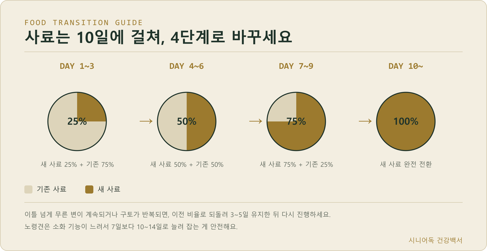
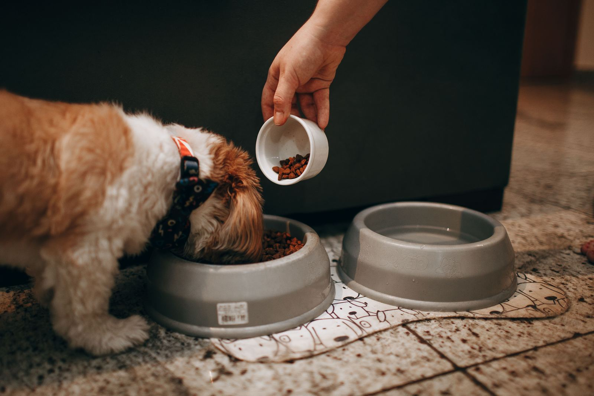
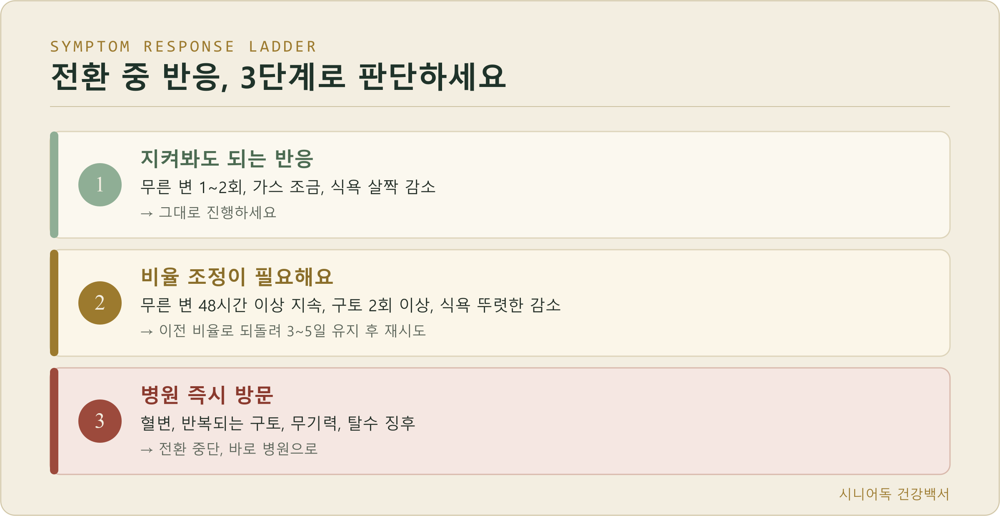
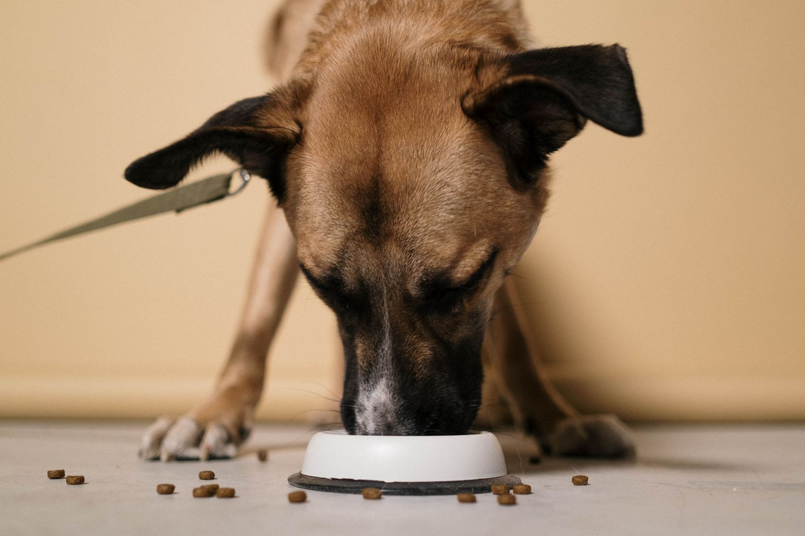
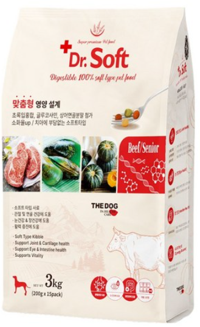
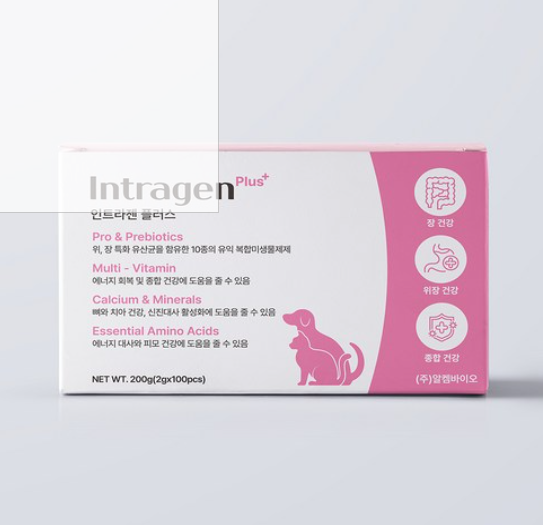

노령견 강아지 사료 전환,
설사 없이 안전하게 바꾸는 법
사료 바꾸고 나서 강아지가 설사하거나 토했던 경험, 한 번쯤 있으실 거예요. 특히 노령견은 이 반응이 더 크고, 더 오래 갈 수 있어요. 오늘은 사료를 며칠에 걸쳐 어떤 비율로 바꿔야 하는지, 전환 중 이상 반응이 왔을 때 어떻게 대처해야 하는지, 그리고 “노령견 사료는 무조건 저단백이어야 한다”는 흔한 오해까지 근거를 갖고 정리해드릴게요.

· 사료 전환은 최소 7일, 노령견은 10~14일에 걸쳐 25%→50%→75%→100% 순으로 늘려가세요.
· 설사가 이틀 넘게 계속되거나 구토가 반복되면 이전 비율로 되돌리고, 혈변·무기력이 있으면 바로 병원에 가세요.
· “노령견 사료=무조건 저단백”은 오해예요. 건강한 노령견은 오히려 근손실 방지를 위해 단백질을 줄이면 안 돼요.
- 왜 사료를 갑자기 바꾸면 안 될까
- 노령견 사료 전환, 며칠에 걸쳐 어떻게 바꿔야 할까
- 전환 중 이상 반응 대처법 (병원 가야 하는 신호)
- “노령견 사료=저단백” 오해, 진짜일까
- 노령견 사료 고르는 진짜 기준
- 전환에 도움되는 용품
- FAQ
왜 사료를 갑자기 바꾸면 안 될까
장내 미생물총은 기존 사료 성분에 맞춰져 있다가, 갑자기 새로운 단백질원·지방 함량이 들어오면 소화 효소와 장내 미생물이 적응할 시간이 없어서 설사·구토·가스가 생겨요. 노령견은 소화기능 자체가 젊을 때보다 느려져 있어서 이 적응 기간이 더 오래 걸려요. 성견은 보통 7일이면 충분하지만, 노령견은 10~14일로 잡는 게 안전해요.
노령견 사료 전환, 며칠에 걸쳐 어떻게 바꿔야 할까
| 기간 | 새 사료 비율 | 기존 사료 비율 |
|---|---|---|
| Day 1~3 | 25% | 75% |
| Day 4~6 | 50% | 50% |
| Day 7~9 | 75% | 25% |
| Day 10~ | 100% | 0% |
노령견이거나 소화기가 예민한 아이라면 각 단계를 3일이 아니라 4~5일씩 유지해서 전체 기간을 10~14일로 늘리세요. 급할 것 없어요, 며칠 더 여유를 두는 게 훨씬 안전해요.

전환 중 이상 반응 대처법
전환 중 반응을 세 단계로 나눠서 판단하시면 돼요.

| 단계 | 증상 | 대처 |
|---|---|---|
| 지켜봐도 되는 반응 | 무른 변 1~2회, 가스 조금, 식욕 살짝 감소 | 그대로 진행 |
| 비율 조정 필요 | 무른 변 48시간 이상 지속, 구토 2회 이상, 식욕 뚜렷한 감소 | 이전 비율로 되돌려 3~5일 유지 |
| 병원 즉시 방문 | 혈변, 반복되는 구토, 무기력, 탈수 징후 | 전환 중단, 바로 병원 |
비율 조정이 필요한 수준이면, 무리해서 다음 단계로 넘어가지 마세요. 문제없이 소화했던 마지막 비율로 돌아가 3~5일 유지한 다음 다시 진행하시면 돼요. 혈변이나 반복 구토, 무기력이 보이면 단순 전환 반응이 아니라 다른 질환일 수 있어서 바로 병원에 가야 해요.
“노령견 사료=무조건 저단백” 그 오해, 진짜일까
예전엔 신장 부담을 줄인다는 이유로 노령견에게 저단백 사료를 무조건 권했는데, 이건 최신 수의영양학 기준으로는 틀린 상식이에요. 2020년 WSAVA(세계소동물수의사회) 영양위원회 리뷰에서도, 건강한 노령견에게 일률적인 단백질 제한이 필요하지 않고 오히려 근손실(사르코페니아) 방지를 위해 중~고단백(건물 기준 28~30%)을 유지하는 게 낫다고 밝혔어요.
신장질환을 실제로 진단받은 경우에만 저인(低燐) 처방식이 필요한 거고, 이건 수의사 처방 하에 진행해야 하는 별개의 얘기예요. 그냥 “나이 들었으니까” 저단백 사료로 바꾸는 건 오히려 근육량 감소를 부추길 수 있어요.
노령견 사료 고르는 진짜 기준
1. 칼로리는 낮추되 영양밀도는 높게
나이 들면 대사량이 줄어서 칼로리는 낮아야 하지만, 그만큼 단백질·비타민 밀도는 높은 제품을 골라야 근손실을 막을 수 있어요.
2. 관절 성분 확인
글루코사민·콘드로이틴, 오메가3(EPA·DHA)가 들어있는지 사료 뒷면 성분표에서 확인하세요.
3. 신장질환 진단이 없다면 저단백 사료는 필요 없어요
건강검진에서 신장 수치가 정상이라면, 굳이 저단백 사료를 찾아 헤맬 필요 없이 일반 시니어 사료로 충분해요.

전환에 도움되는 용품
전환 단계에서 실제로 섞어줄 시니어 전용 사료가 필요하고, 전환 시작 며칠 전부터 유산균을 함께 급여하면 설사 위험을 더 낮출 수 있어요.

노령견 전용 시니어 사료
전환 단계에서 섞어줄 새 사료예요. 소형 노령견 기준으로 저작이 편한 소프트 타입이라, 치아가 약해진 아이에게도 부담이 적어요.
더독 노령견용 강아지 닥터 소프트 사료 ↗
반려동물 유산균 / 프로바이오틱스
전환 중 장내 미생물이 새 성분에 적응하는 걸 도와줘요. 전환 시작 며칠 전부터 급여하면 설사 위험을 더 낮출 수 있어요.
인트라젠 반려동물 플러스 영양제 ↗자주 묻는 질문
Q. 사료 전환을 꼭 이렇게 천천히 해야 하나요? 그냥 바로 바꾸면 안 되나요?
A. 안 돼요. 급하게 바꾸면 설사·구토 위험이 커지고, 노령견은 이 반응이 탈수로 이어질 수도 있어요. 며칠 아끼려다 병원비가 더 나갈 수 있으니 정해진 기간을 지키세요.
Q. 전환 중 며칠 지켜봤는데 계속 무른 변이면 처음부터 다시 시작해야 하나요?
A. 처음부터 다시 할 필요는 없어요. 문제없이 소화했던 마지막 비율로 돌아가서 3~5일 유지한 다음 다시 진행하시면 돼요.
Q. 노령견은 무조건 저단백 사료로 바꿔야 하는 거 아닌가요?
A. 아니에요. 신장질환을 진단받은 경우가 아니라면 저단백 사료가 오히려 근손실을 부추길 수 있어요. 건강검진에서 신장 수치가 정상이라면 일반 시니어 사료로 충분해요.